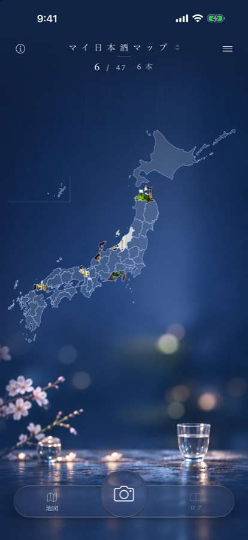
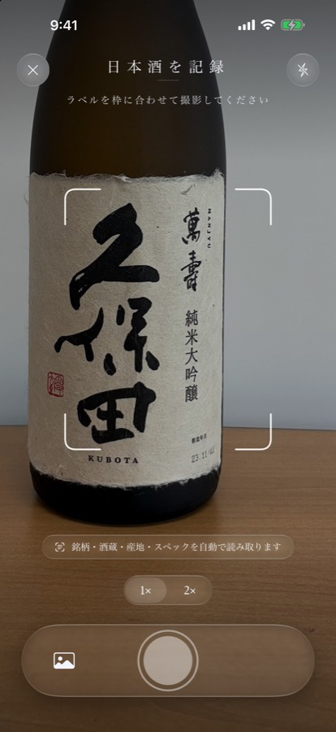
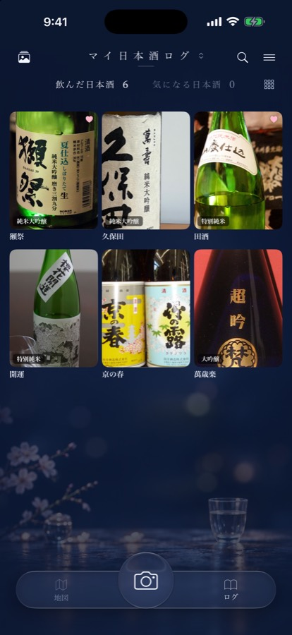
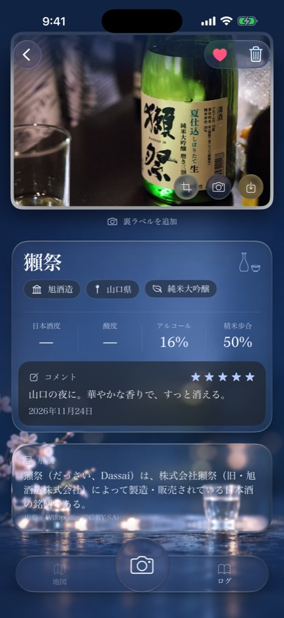

さけマップ
飲んだお酒のラベルで、
日本地図を埋めていく。
日本酒と焼酎のラベルを撮るだけで、銘柄・蔵元・産地を読み取って記録します。
App Storeで入手無料・iPhone 開かないときは、こちらからApp StoreへTikTokやInstagramの中では、App Storeが開かないことがあります。右上の「…」から「ブラウザで開く」を選ぶか、してSafariに貼り付けてください。




- 撮るだけで記録
- 入力は要りません。撮りためた写真もまとめて登録できます。
- 写真で埋まる日本地図
- 県をタップすると、その県の形に写真がはまったページが開きます。
- 日本酒も焼酎も
- それぞれに地図とログがあり、題字をタップで切り替わります。